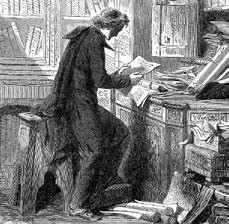
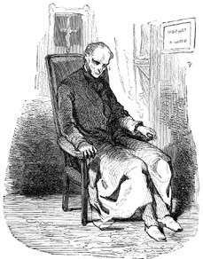

10 ve 11 Nisan 1897 güncelerinden
Savaşın bitimiyle Simonini her zamanki işine dönmüştü. Neyse ki, can veren onca kişi yüzünden miras hakları gündemdeydi –cephede ya da barikatlarda şehit düşen pek çok genç ise henüz vasiyet hazırlamaya vakit bulamamıştı– ve bu nedenle Simonini'nin işi başından aşkındı – arpalığı boldu. Öncesinde yoğun bir fedakârlık yaşanınca barış ne güzel bir şeydi.
Günce, sonraki yılların rutin noterlik çalışmalarını ele alıyor ve o dönemde asla aklından çıkartamadığı bir arzuyu vurguluyordu: Prag Mezarlığı belgesinin satışıyla ilgili ilişkileri yeniden kurabilmek istiyordu. Goedsche'nin bu arada ne iş yaptığını bilmiyordu ama onun önüne geçmeliydi. İlginç olan, Komün günleri boyunca Yahudilerin ortadan kaybolmuş olmalıydı. Köklü komplocular gizlice Komün'ün sonunu getirmeye çalışıyorlar ya da tam tersine sermaye zenginleri savaş sonrasına hazırlık yapmak için Versay'da mı gizleniyorlardı? Ama onlar masonların arkasında dururlardı, Paris masonları Komüncülerle birlikte saf tutmuşlardı; Komüncüler bir başpiskoposu vurmuşlardı ve Yahudilerin de bir şekilde bunda parmağı olmalıydı. Çocuklar bile öldürülüyordu, nerede kalmış piskoposlar.
O böyle düşünürken, 1876 yılının bir günü alt kattaki kapının çaldığını işitti ve açtığında karşısında rahip giysili yaşlı bir bey buldu. Simonini önce onun kutsal ekmek ticareti yapan satanist rahip olduğunu sandıysa da daha dikkatli bakınca artık kırlaşmış ama eskisi gibi dalgalı saç yığını altında, neredeyse otuz yıl aradan sonra Peder Bergamaschi'yi tanıdı.
Karşısında duran adamın, çocukluğunu bildiği Simonino olduğundan emin olmak Cizvit rahip için daha zor oldu; –savaştan sonra gene siyah olsa da kırklık biri için artık kırlaşmaya başlayan– sakal da durumu güçleştirmişti. Sonra gözleri ışıldadı ve gülümseyerek şöyle dedi: "Ah, evet; sen Simonino'sun, sensin değil mi oğlum benim! Neden kapıda tutuyorsun beni?"
Gülümsüyordu ama, söylemeye cüret edebilirsek, bir kaplan, en azından bir kedi gibi gülümsüyordu. Simonini onu üst kata almış ve hemen sormuştu: "Nasıl bulabildiniz beni?"
"Eh oğlum" demişti Bergamaschi, "biz Cizvitlerin şeytandan bile daha çok şey bildiğimizi unuttun mu? Piemonte halkı bizi Torino'dan kovduysa da pek çok kişiyle iyi ilişkilerimi sürdürdüğümden önceleri bir noterin yanında çalışarak sahte vasiyetler yazdığını öğrendim ve biraz buruldum; sonra Piemonte gizli servislerine teslim ettiğin bir raporda III. Napolyon'un danışmanı olarak adımı zikrettiğin ve beni Prag Mezarlığı'nda Fransa ve Sardinya Krallığı'na karşı entrika düzenlemekle suçladığını öğrendim. İyi bir buluş diyebilirdim ama sonradan bütün bunları o rahip düşmanı Sue'den kopya ettiğini fark ettim. Seni aradım ama Garibaldi ile birlikte Sicilya'ya gittiğini, sonra da İtalya'dan ayrıldığını söylediler. Dernek'le nazik ilişkiler içinde olan General Negri di Saint Front bana Paris'i işaret etti; biraderlerimin de İmparatorluğun gizli servislerinde tanıdıkları var. Sonuç olarak Ruslarla ilişki kurduğunu ve Prag Mezarlığı'nda geçen hakkımızdaki şu raporun Yahudiler hakkında bir rapora dönüştüğünü öğrendim. Ama aynı zamanda Joly adındaki kişiden bilgi aldığını öğrenince, gizli yollardan Carbonari ile çarpışma sırasında kahramanca can veren Lacroix diye birinin ofisinde kalmış bu kitabın bir kopyasını ele geçirebildim; Joly, Sue'den kopya çekmişti, sen de Joly'den kopya çekmiştin. Nihayet Alman Cizvit kardeşlerim bana Goedsche diye birinin gene Prag Mezarlığı'nda geçen bir törenden söz ettiğini bildirdiler; burada da Yahudiler aşağı yukarı senin Ruslara teslim ettiğin raporda kaleme aldığın şeyleri söylüyorlardı. Ne var ki ben, Cizvitlerin göründüğü ilk şeklin sana ait olduğunu ve Goedsche'nin berbat romanından önce yazıldığını biliyordum."
"Nihayet hakkımı veren biri çıktı!"
"Bırak da sözümü bitireyim. Sonra, savaş, kuşatma ve Komün günleri yüzünden Paris benim gibi rahip giysili biri için sağlıksız bir yer haline gelmişti. Seni bulmak için buraya dönmeye karar verdim, çünkü Prag Mezarlığı'ndaki Yahudi öyküsünün aynısı, birkaç yıl önce Sen Petersburg'da yayımlanan bir fasikülde boy gösterdi. Gerçek olaylara dayanan bir romandan alıntı olarak sunuluyordu; yani kaynak Goedsche idi. Şimdi, tam da bu yıl aşağı yukarı aynı metin Moskova'da yayımlanan bir kitapçıkta çıktı. Sözün özü, ister öyle ister böyle, Yahudiler çevresinde toplumsal bir durum yaratılmaya çalışılıyor ve onların bir tehdit oluşturduğu gözlere sokulmak isteniyor. Ama bu bizim için de bir tehdit anlamına geliyor, çünkü Alliance Israélite aracılığıyla masonların arkasına gizleniyorlar ve Papa Hazretleri bütün bu kilise düşmanlarına karşı bir mücadele başlatmaya karar verdi. Ve işte sevgili Simonino, Piemontelilerle oynadığın oyun yüzünden bana kendini bağışlatmalısın. Adını bu kadar kötüye çıkardıktan sonra İsa Derneği'ne bir şeyler borçlusun."
Bu Cizvitler Hébuterne'den, Lagrange'dan, Saint Front'dan daha becerikliydiler, her zaman herkes hakkındaki her şeyi biliyorlardı, gizli servislere gereksinme duymuyorlardı, çünkü bizzat kendileri bir gizli servisti; dünyanın dört bir yanında biraderleri vardı ve Babil Kulesi'nin yıkılmasından bu yana konuşulan her dilde söylenen her sözü takip ediyorlardı.
Komün'ün bütün Fransa'da çökmesinden sonra din adamlarına karşı çıkanlar bile son derece dindar olmuşlardı. Hatta Tanrı'sız geçen günleri unutturmak için Montmartre'a bir tapınak yapılmasından bile söz edilir olmuştu. Restorasyon dönemine girildiyse, iyi bir restoratör olarak çalışmak gerekiyordu. "Anlaştık peder" dedi Simonini, "benden ne istediğinizi söyleyin."
"Senin çizginde ilerleyelim. İlk önce, hahamın konuşmasını Goedsche denen o adam kendi adına satıyorsa, bir yandan bundan daha zengin ve şaşırtıcı bir yorum yaratmalı; öte yandan da Goedsche'yi kendi yorumunu yaymaktan men edecek hale sokmalı."
"O sahtekârı nasıl kontrol altına alabilirim ki?"
"Alman biraderlerime onu gözden kaçırmamalarını ve gerekirse sesini kesmelerini söyleyeceğim. Hayatı hakkında bildiklerimize bakılacak olursa, dört bir yandan yakalanabilecek bir şahıs. Şimdi sen hahamın konuşmasını daha ayrıntılı biçimde ve günümüzün siyasi olaylarına daha fazla gönderme yapan bir belge olarak yeniden kaleme almalısın. Joly'nin hakaretlerinden de koru kendini. Diyeceğim, Yahudi Makyavelizmini ve devletin yozlaşması için yaptıkları planları ortaya dökmelisin."
Bergamaschi, hahamın konuşmasını daha inanılır kılmak için Rahip Barruel'in anlattığı her şeyi ve özellikle de dedesinin ona gönderdiği mektubu yeniden gündeme getirmesi gerektiğini sözlerine ekledi. Acaba Simonini bunun bir kopyasını hâlâ saklıyor muydu? Barruel'e gönderilmiş özgün metin olarak ortaya çıkartılabilirdi.

Bergamaschi, hahamın konuşmasını daha inanılır kılmak için Rahip Barruel'in anlattığı her şeyi ve özellikle de dedesinin ona gönderdiği mektubu yeniden gündeme getirmesi gerektiğini sözlerine ekledi.
Simonini kopyayı dolabın dibinde, bir zamanlar kullandığı küçük mücevher kutusunun içinde bulmuştu. Böyle değerli bir buluntu karşılığında Peder Bergamaschi'den alacağını istemişti. Cizvitler cimri olurdu ama şimdi işbirliği yapmak zorundaydı. Ve işte 1878 Temmuzu'nda çıkan Contemporain dergisinde Barruel'e sırdaşlık etmiş olan Peder Grivel'in anıları, –Simonini'nin başka kaynaklardan ve dedesinin mektubundan edinmiş olduğu haberlere dayanarak– yayımlanmıştı. "Prag Mezarlığı arkadan gelecek" demişti Peder Bergamaschi. "Bazı patlayıcı haberleri bir kerede verirsen ilk izlenimden sonra unutulur. Aksine yudum yudum vermeli; her yeni haber bir öncekinin anısını canlandıracaktır."
Simonini, yazdıkça dedesinin mektubunun yarattığı repêchage yüzünden açık bir mutluluk duymaya başlamıştı; erdemli bir duyguyla yaptığı bu işin, belli bir mirası akladığını hissediyordu. İyi niyetle ve gayretle hahamın konuşmasını zenginleştirmeye girişmişti. Joly'yi yeni baştan okumuş ve bu okuyuşunda tartışma meraklısı bu şahsın Sue'nün etkisi altında o kadar da fazla kalmamış olduğunu düşünmüştü; onun Machiavelli-Napolyon'una bambaşka haksızlıklar yüklemişti ve bunlar bizzat Yahudiler için düşünülmüş gibiydi.
Simonini toparladığı malzemenin ne kadar zengin ve geniş olduğunu fark ediyordu: Hahamın, Katolikleri etkilemesi beklenen vaazında geleneklerin saptırılması planına sık sık vurgu yapılmalıydı ve belki Gougenot des Mousseaux'dan Yahudilerin fiziksel üstünlüğü veya Brafmann'dan Hıristiyanları tefecilikle sömürme fikri ödünç alınmalıydı. Cumhuriyetçiler giderek daha fazla denetlenen basına vurgu yapılmasından rahatsız olacaklardı; esnaf ve küçük tasarruf sahipleri bankalara güvenmediğinden (halk bankaların sadece Yahudilerin elinde olduğunu düşünürdü) Yahudilerin uluslararası ekonomik planlarından söz edildiğinde kulaklarını dikeceklerdi.
Zihninde yavaş yavaş gelişen düşüncenin fazla Yahudi ve Kabala koktuğunu bilmiyordu. Hazırlaması gereken sadece Prag Mezarlığı'nda tek bir sahne ve hahamın tek bir vaazı olmamalıydı; kilise, sosyalistler, Ruslar, Fransızlar için farklı farklı konuşmalar yazmalıydı. Bütün vaazları önceden yazmak zorunda da değildi. Ayrı ayrı kâğıtlar farklı biçimde karıştırıldığında şu ya da bu vaazı ortaya çıkarmalıydı – böyle olunca farklı alıcılara ve her birinin gereksinmesine uygun vaazı satabilirdi. Kısacası, iyi bir noter gibi değişik davalarda savunmaları için avukatlara vereceği farklı tanıklıkları, itirafları tutanağa geçirir gibiydi –nitekim bu notlarına Protokoller başlığını atmıştı– Peder Bergamaschi'ye her şeyi göstermiyordu; onun için sadece en dinsel özelliklere sahip olanları seçiyordu.
Simonini, güncesinde o yıllara ilişkin çalışmasını ilginç bir notla bitiriyor: 1878 yılının sonuna doğru aldığı ve onu çok rahatlatan bir habere göre hem Goedsche (muhtemelen onu her geçen gün daha şişiren bira yüzünden) hem de zavallı Joly –her zamanki umutsuzluğuyla başına sıktığı tek kurşun yüzünden– bu dünyadan ayrılmışlardı. O kötü bir insan değildi, ruhu huzur bulsun.
Olasılıkla o sevgili merhumu anmak için günce yazarı bu konuyu fazla uzatmıştı. Yazarken yazısı giderek dolaşık bir hal almış ve yarıda kesilmişti. Belli ki yazarken uyuyakalmıştı.
Ama ertesi gün, neredeyse akşamüstüne doğru uyanan Simonini, güncesinde Dalla Piccola'nın yazısını görüyordu; Rahip, sabah bir şekilde onun çalışma odasına girmiş, alter ego'sunun yazdıklarını okumuş ve ahlaki olarak bazı vurgulamalar yapmayı uygun bulmuştu.
Neyi vurgulamıştı? Goedsche ve Joly'nin ölümlerinin bizim yüzbaşıyı şaşırtmaması gerektiğini, –bilerek unutmaya çalışmıyorsa– aslında onları pek hatırlamadığını belirtmişti.
Dedenin mektubu Contemporain dergisinde yayımlandıktan sonra Simonini, Goedsche'den bir mektup almıştı; dilbilgisel olarak kuşku götürse de oldukça açık bir dille yazılmıştı: "Sevgili Yüzbaşı, –diyordu mektup– tahminime göre Contemporain dergisinde yayımlananlar, daha sonra yayımlamayı planladıklarınızın mezesi olarak düşünülmelidir; bu belgenin bir kısmının bana ait olduğunu çok iyi biliyoruz; öyle ki (elde Biarritz) bütün metnin yazarı olduğumu da kanıtlayabilirim; oysa virgülleri sizin eklediğinize ilişkin bile olsa sizin elinizde hiçbir şey yok. Bu nedenle, her şeyden önce benimle buluşma konusunu düşünmenizi öneriyorum; belki –sizin tarzınızda olmayan– bir noter huzurunda bir araya gelebilir ve Prag Mezarlığı raporunun kime ait olduğu konusunu görüşebiliriz. Bunu kabul etmezseniz, sahtekârlığınızı kamuya açıklayacağım. Hemen ardından da gidip onun eliyle yazdığı bir mektubu yağmaladığınızı henüz bilmeyen Joly adındaki beyefendiyi haberdar edeceğim. Joly'nin avukat olduğunu unutmadıysanız, bu durumun sizin için ciddi bir sıkıntı yaratacağını anlayabilirsiniz."
Telaşlanan Simonini hemen Peder Bergamaschi ile bağlantı kurdu; rahip şöyle dedi: "Sen Joly ile ilgilen, biz Goedsche ile ilgilenelim."
Simonini, Joly ile nasıl ilgileneceğini bilemeyerek tereddüt ederken, Peder Bergamaschi'nin ona yazdığı bir pusuladan zavallı Herr Goedsche'nin yatağında huzur içinde can verdiğini öğreniyordu; rahip ona lanet olası bir Protestan bile olsa merhumun ruhunun huzur bulması için dua etmesini öğütlüyordu.
Simonini şimdi Joly ile ilgilenmenin ne anlama geldiğini anlıyordu. Bazı şeyleri yapmaktan hoşlanmıyordu ve eninde sonunda Joly'ye borçlu olan kendisiydi ama bazı vicdani kuruntular yüzünden Bergamaschi ile yaptığı planın suya düşmesini göze alamazdı. Az önce gördüğümüz üzere Simonini, şikâyetçi protestolarıyla rahatsız olmadan Joly'nin metnini yoğun bir biçimde kullanmayı düşünüyordu.
Bu arada bir kez daha eski Lappe Sokağı'na gitmiş ve evde tutabilecek küçüklükte bir tabanca almıştı: Çok güçlü olmasa da gürültüsüz bir silahtı bu. Joly'nin adresini anımsıyordu, ufak da olsa apartman dairesinin güzel halılarla ve duvarda güzel işlemelerle süslü olduğunu biliyordu; bunlar da sesi iyice emecekti. Her ne olursa olsun Pont Royal'den ve Bac Sokağı'ndan geçen ya da Sen Nehri boyunca işleyen araba ve omnibüslerin gürültüsünün sesi bastırması için sabah eyleme geçmek daha iyi olacaktı.
Kapısını çaldığı avukat onu hayretle karşılamış ama hemen kahve ikram etmişti. Joly hemen yaşadığı talihsizlikleri anlatmaya koyulmuştu. Her zamanki gibi yalancı gazeteleri okuyan kişilerin büyük bölümünün (okurlar ve redaktörler) gözünde devrimin şiddetini ve önyargılarını reddetmesine karşın o hâlâ bir Komüncü olarak kalmıştı. Cumhurbaşkanlığına adaylığını koyan ve parasını cebinden ödeyerek bastırıp duvarlara astığı afişlerle onu suçlayan Grévy'nin siyasi hırslarına karşı çıkmanın doğru olacağını düşünmüştü. İşte bunun üzerine Cumhuriyet'e karşı komplolar yapan bir Bonapart yanlısı olmakla suçlanmış; Gambetta küçümseyerek "geçmişlerinde yargı sicili bulunan satılık kalemler" şeklinde bir konuşma yapmış; Raymond About ona bir sahtekârmış gibi davranmıştı. Sözün özü, Fransa basınının yarısı ona saldırmış, sadece Figaro bildirisini yayımlamış, ötekiler savunma mektubunu basmayı reddetmişlerdi.
Aslında iyi düşününce, Joly mücadelesini kazanmıştı, çünkü Grévy adaylıktan çekilmişti, ama Joly asla memnun olmayan ve adaletin sonuna kadar uygulanmasını isteyen insanlardan biriydi. Kendisini suçlayan iki kişiyi düelloya davet ettikten sonra ilanını reddettikleri için on gazeteye kara çalma ve kamusal hakaret davası açmıştı.
"Kendi savunmamı üstlendim ve Simonini sizi temin ederim ki basının görmezden geldiği ve konuşulmuş bütün skandalları ifşa ettim. Bütün o edepsizlere (yargıçları da dahil ediyorum) ne dedim, biliyor musunuz? Baylar, ben iktidar sahibiyken sizi susturan İmparatorluk'tan korkmadım ve şimdi onun en kötü taraflarına öykünen halinize gülüyorum. Sözümü kesmeye çalıştıklarında şöyle söyledim: Baylar, İmparatorluk beni nefrete teşvik etmek, hükümeti aşağılamak ve imparatora hakaret etmek suçuyla yargıladı – ama Sezar'ın yargıçları konuşmama izin verdiler. Şimdi Cumhuriyet'in yargıçlarından İmparatorluk zamanında sahip olduğum özgürlüğe sahip olabilmeyi talep ediyorum!"
"Ne oldu peki sonunda?"
"Ben kazandım; ikisi dışında bütün gazeteler hüküm giydi."
"Peki, o halde sizi hâlâ üzen nedir?"
"Her şey. Karşı tarafın avukatı eserimi övüyor ama gene de ölçüsüz tutkularım yüzünden geleceğimi mahvettiğimi, inatçı başarısızlığın gururumun cezası gibi beni adım adım izlediğini söylüyor. Üstelik şuna buna saldırmama karşın ne milletvekili ne bakan olmuşum. Belki siyasetçi olarak değil, edip olarak daha başarılı olabilirmişim. Ama bu da doğru değil, çünkü yazdığım çoktan unutuldu ve davalarımı kazandıktan sonra önemli olan bütün salonlardan uzaklaştırıldım. Pek çok savaşı kazandım ama gene de başarısız biriyim. Öyle bir an geliyor ki, insanın içinde bir şeyler kırılıyor; ne enerji ne istek kalıyor. Yaşamak gerekir diyorlar ama yaşamak son vadede intihara sürükleyen bir sorun."

"Öyle bir an geliyor ki, insanın içinde bir şeyler kırılıyor; ne enerji ne istek kalıyor. Yaşamak gerekir diyorlar ama yaşamak son vadede intihara sürükleyen bir sorun."
Simonini, az sonra yapacağı eylemin pek yerinde olacağını düşünmeye başlamıştı. Bu bahtsızın, ciddi ve küçük düşürücü bir harekette bulunmasını, son bir başarısızlık yaşamasını engellemiş olacaktı. Bir hayır işlemek üzereydi. Üstelik tehlikeli bir tanıktan da kurtulmuş olacaktı.
Joly'den görüşünü almak istediği bir belgeye şöyle bir göz atmasını rica etmişti. Eline son derece kalın bir paket vermişti: bunlar eski gazetelerdi ve konunun ne olduğunu anlamak zaman alacaktı; Joly elinden kayan kâğıtları toparlayabilmek için bir koltuğa oturmuştu.
Sakince okumaya başlayan zavallının arkasına geçen Simonini tabancanın namlusunu onun başına dayamış ve ateş etmişti.
Şakağında açılan delikten ince bir kan sızarken Joly kaykılmış, kolları aşağı düşmüştü. Tabancayı eline vermek zor olmamıştı. Neyse ki bu, parmak izlerini ortaya çıkartan mucizevi bir tozun bulunmasından altı yedi yıl önce olmuştu. Simonini'nin Joly ile hesabını kapattığı dönemde henüz Bertillon kuramları geçerliydi ve bunlar kuşkulunun iskeletinin ve öteki kemiklerinin ölçümüne dayanıyordu. Joly'ninkinin intihar olmadığından kimse kuşkulanmazdı.
Simonini gazete paketini toparlamış, birlikte kahve içtikleri iki fincanı yıkamış ve evi derli toplu bir biçimde bırakmıştı. Sonradan öğrendiğine göre, apartmanın kapıcısı, komşusunu göremeyince Saint-Thomas-d'Aquin Mahallesi karakoluna haber vermişti. Kapı kırılmış, ceset bulunmuştu. Gazetedeki kısacık habere göre tabanca yere düşmüştü. Belli ki Simonini eline iyice sıkıştıramamıştı ama önemi yoktu. Şans eseri masada annesine, kız kardeşine, erkek kardeşine yazdığı mektuplar vardı... Açıkça intihardan söz etmese de tümü ağır ve soylu bir kötümserlik yüklüydü. Zavallının intihara gerçekten niyeti olmasaydı Simonini bu kadar rahatlamazdı.
Dalla Piccola, ev ortağına belki sadece günah çıkartma sırasında öğrendiği ve hatırlamak istemediği şeyleri ilk kez hatırlatmıyordu. Simonini biraz kızmıştı ve Dalla Piccola'nın güncesinde sayfanın altına onu huzursuz edecek bir iki söz yazmıştı.
Elbette Anlatıcı'nızın göz attığı belge sürprizlerle dolu ve günün birinde bundan bir roman bile çıkarılabilir.